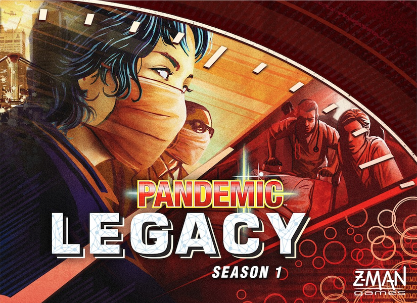
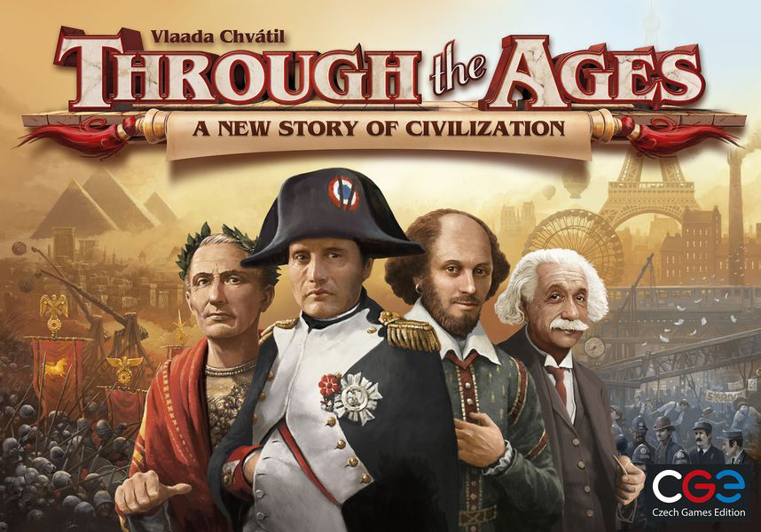
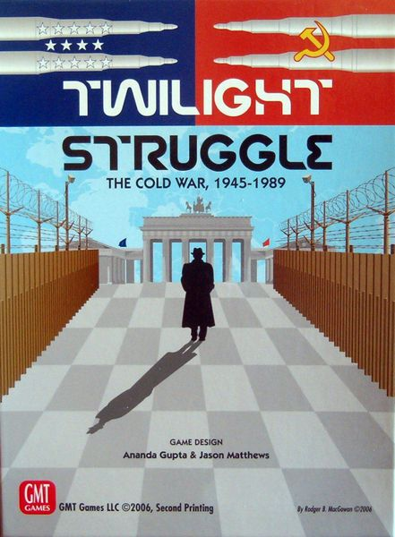

The best 5 board games
 |
1.GloomhavenGloomhaven is a game of Euro-inspired tactical combat in a persistent world of shifting motives. Players will take on the role of a wandering adventurer with their own special set of skills and their own reasons for traveling to this dark corner of the world. Players must work together out of necessity to clear out menacing dungeons and forgotten ruins. In the process, they will enhance their abilities with experience and loot, discover new locations to explore and plunder, and expand an ever-branching story fueled by the decisions they make. |
|---|---|
2.Pandemic Legacy: Chapter 1Pandemic Legacy is a co-operative campaign game, with an overarching story-arc played through 12-24 sessions, depending on how well your group does at the game. At the beginning, the game starts very similar to basic Pandemic, in which your team of disease-fighting specialists races against the clock to travel around the world, treating disease hotspots while researching cures for each of four plagues before they get out of hand. |
 |
 |
3.Terraforming MarsIn the 2400s, mankind begins to terraform the planet Mars. Giant corporations, sponsored by the World Government on Earth, initiate huge projects to raise the temperature, the oxygen level, and the ocean coverage until the environment is habitable. In Terraforming Mars, you play one of those corporations and work together in the terraforming process, but compete for getting victory points that are awarded not only for your contribution to the terraforming, but also for advancing human infrastructure throughout the solar system, and doing other commendable things. |
4.Through the Ages A New Story of CivilizationThrough the Ages: A New Story of Civilization is the new edition of Through the Ages: A Story of Civilization, with many changes small and large to the game's cards over its three ages and extensive changes to how military works. Through the Ages is a civilization building game. Each player attempts to build the best civilization through careful resource management, discovering new technologies, electing the right leaders, building wonders and maintaining a strong military. Weakness in any area can be exploited by your opponents. The game takes place throughout the ages beginning in the age of antiquity and ending in the modern age. |
 |
|  |
5.Twilight StruggleIn 1945, unlikely allies toppled Hitler's war machine, while humanity's most devastating weapons forced the Japanese Empire to its knees in a storm of fire. Where once there stood many great powers, there then stood only two. The world had scant months to sigh its collective relief before a new conflict threatened. Unlike the titanic struggles of the preceding decades, this conflict would be waged not primarily by soldiers and tanks, but by spies and politicians, scientists and intellectuals, artists and traitors. Twilight Struggle is a two-player game simulating the forty-five year dance of intrigue, prestige, and occasional flares of warfare between the Soviet Union and the United States. The entire world is the stage on which these two titans fight to make the world safe for their own ideologies and ways of life. The game begins amidst the ruins of Europe as the two new "superpowers" scramble over the wreckage of the Second World War, and ends in 1989, when only the United States remained standing. |